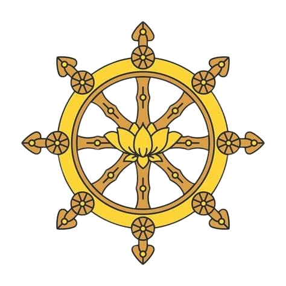

Kumpulan Puji-pujian dan Mantra Buddha Mahayana

Dengan penuh rasa syukur, kami haturkan penghormatan tertinggi kepada Triratna (Buddha, Dhamma, Sangha) yang telah menjadi panutan dan inspirasi spiritual dalam pengembangan situs Buku Mahayana. Kami selaku pembuat dan pengembang website ini (Valencio Arjun, Nelson Antonio Celo, dan Angky Adi Putra) berharap website ini dapat menjadi sarana bermanfaat untuk pendalaman keyakinan dan perkembangan Buddha Dharma serta memperkuat rasa kebersamaan antar umat Buddha.
Meskipun masih dalam tahap penyempurnaan, kami sangat terbuka terhadap masukan yang membangun demi peningkatan kualitas situs ini. Pengembangan situs website ini adalah proses berkelanjutan. Agar pemutaran Roda Dharma terus berjalan, kami berkomitmen untuk terus memperbaiki Buku Mahayana agar lebih banyak membawa manfaat dan mendukung praktik Dhamma yang sejati.
Kami juga berterima kasih kepada semua pihak yang telah berkontribusi dalam proses pengembangan situs website ini.
Semoga semua makhluk hidup berbahagia.
爐香乍熱
法界蒙熏
諸佛海會 悉遙聞
隨處結祥雲
誠意方殷，諸佛現全身
南無香雲蓋菩薩摩訶薩 (3X)
南無大悲觀世音菩薩 (三稱)
南無喝囉怛那哆囉夜耶
南無阿唎耶婆盧羯帝爍缽囉耶
菩提薩埵婆耶 摩訶薩埵婆耶
摩訶迦盧尼迦耶
唵薩皤囉罰曳 數怛那怛寫
南無悉吉栗埵伊蒙阿唎耶
婆盧吉帝室佛囉楞馱婆
南無那囉謹墀 醯利摩訶皤哆沙咩
薩婆阿他豆輸朋 阿逝孕 薩婆薩哆
那摩婆薩哆 那摩婆伽 摩罰特豆 怛姪他 唵 阿婆盧醯 盧迦帝 迦羅帝
夷醯唎 摩訶菩提薩埵 薩婆薩婆 摩囉摩囉 摩醯摩醯唎馱孕 俱盧俱盧羯蒙
度盧度盧罰闍耶帝 摩訶罰闍耶帝 陀囉陀囉 地唎尼 室佛囉耶 遮囉遮囉 麼麼罰摩囉 穆帝隸
伊醯伊醯 室那室那 阿囉僧佛囉舍利 罰沙罰僧佛囉舍耶 呼嚧呼嚧摩囉 呼嚧呼嚧醯利
娑囉娑囉 悉唎悉唎 蘇嚧蘇嚧 菩提夜菩提夜 菩馱夜菩馱夜 彌帝唎夜 那囉謹墀 地利瑟尼那
婆夜摩那 娑婆訶 悉陀夜 娑婆訶 摩訶悉陀夜 娑婆訶 悉陀喻藝 室皤囉耶 娑婆訶 那囉謹墀 娑婆訶
摩囉那囉 娑婆訶 悉囉僧阿穆佉耶 娑婆訶 娑婆摩訶阿悉陀夜 娑婆訶 者吉囉阿悉陀夜 娑婆訶
波陀摩羯悉陀夜 娑婆訶 那囉謹墀皤伽囉耶 娑婆訶 摩婆利勝羯囉夜 娑婆訶
南無喝囉怛那哆囉夜耶 南無阿唎耶婆羅吉帝爍皤囉夜 娑婆訶
唵悉殿都漫多囉跋陀耶 娑婆訶
阿彌陀佛身金色
相好光明無等倫
白毫宛轉五須彌
紺目澄清四大海
光中化佛無數億
化菩薩眾亦無邊
四十八願渡眾生
九品咸令登彼岸
南無西方極樂世界大慈大悲阿彌陀佛
南無阿彌陀佛 (三稱)
阿彌陀佛 (三稱)
南無本師釋迦牟尼佛 (三稱)
南無阿彌陀佛 (三稱)
南無觀世音菩薩 (三稱)
南無大勢至菩薩 (三稱)
南無清淨大海眾菩薩摩訶薩 (三稱)
一者禮敬諸佛
二者稱讚如來
三者廣修供養
四者懺悔業障
五者隨喜功德
六者請轉法輪
七者請佛住世
八者常隨佛學
九者恆順眾生
十者普皆迴向
十方三世一切佛
一切菩薩摩訶薩
摩訶般若波羅蜜
皈依佛，當願眾生，體解大道，發無上心
皈依法，當願眾生，深入經藏，智慧如海
皈依僧，當願眾生，統領大眾，一切無礙
願消三障諸煩惱，願得智慧真明了
普願罪障悉消除，世世常行菩薩道
Semoga semua makhluk hidup berbahagia
Puja bakti mahayana telah selesai!